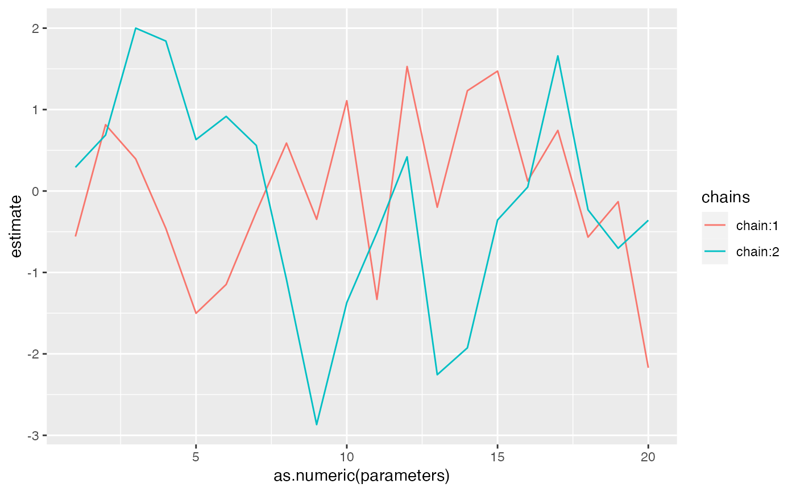

Find which chains to invert by checking the sum of the squared deviations between the first chain and each other chain.
find_inverted_chains(model, trend = 1, plot = FALSE)
| model | A Stan model, |
|---|---|
| trend | Which trend to check |
| plot | Logical: should a plot of the trend for each chain be made?
Defaults to |
invert_chains
set.seed(2) s <- sim_dfa(num_trends = 2) set.seed(1) m <- fit_dfa(y = s$y_sim, num_trends = 1, iter = 30, chains = 2)#> #> SAMPLING FOR MODEL 'dfa' NOW (CHAIN 1). #> Chain 1: #> Chain 1: Gradient evaluation took 3.7e-05 seconds #> Chain 1: 1000 transitions using 10 leapfrog steps per transition would take 0.37 seconds. #> Chain 1: Adjust your expectations accordingly! #> Chain 1: #> Chain 1: #> Chain 1: WARNING: No variance estimation is #> Chain 1: performed for num_warmup < 20 #> Chain 1: #> Chain 1: Iteration: 1 / 30 [ 3%] (Warmup) #> Chain 1: Iteration: 3 / 30 [ 10%] (Warmup) #> Chain 1: Iteration: 6 / 30 [ 20%] (Warmup) #> Chain 1: Iteration: 9 / 30 [ 30%] (Warmup) #> Chain 1: Iteration: 12 / 30 [ 40%] (Warmup) #> Chain 1: Iteration: 15 / 30 [ 50%] (Warmup) #> Chain 1: Iteration: 16 / 30 [ 53%] (Sampling) #> Chain 1: Iteration: 18 / 30 [ 60%] (Sampling) #> Chain 1: Iteration: 21 / 30 [ 70%] (Sampling) #> Chain 1: Iteration: 24 / 30 [ 80%] (Sampling) #> Chain 1: Iteration: 27 / 30 [ 90%] (Sampling) #> Chain 1: Iteration: 30 / 30 [100%] (Sampling) #> Chain 1: #> Chain 1: Elapsed Time: 0.049651 seconds (Warm-up) #> Chain 1: 0.371036 seconds (Sampling) #> Chain 1: 0.420687 seconds (Total) #> Chain 1: #> #> SAMPLING FOR MODEL 'dfa' NOW (CHAIN 2). #> Chain 2: #> Chain 2: Gradient evaluation took 2.7e-05 seconds #> Chain 2: 1000 transitions using 10 leapfrog steps per transition would take 0.27 seconds. #> Chain 2: Adjust your expectations accordingly! #> Chain 2: #> Chain 2: #> Chain 2: WARNING: No variance estimation is #> Chain 2: performed for num_warmup < 20 #> Chain 2: #> Chain 2: Iteration: 1 / 30 [ 3%] (Warmup) #> Chain 2: Iteration: 3 / 30 [ 10%] (Warmup) #> Chain 2: Iteration: 6 / 30 [ 20%] (Warmup) #> Chain 2: Iteration: 9 / 30 [ 30%] (Warmup) #> Chain 2: Iteration: 12 / 30 [ 40%] (Warmup) #> Chain 2: Iteration: 15 / 30 [ 50%] (Warmup) #> Chain 2: Iteration: 16 / 30 [ 53%] (Sampling) #> Chain 2: Iteration: 18 / 30 [ 60%] (Sampling) #> Chain 2: Iteration: 21 / 30 [ 70%] (Sampling) #> Chain 2: Iteration: 24 / 30 [ 80%] (Sampling) #> Chain 2: Iteration: 27 / 30 [ 90%] (Sampling) #> Chain 2: Iteration: 30 / 30 [100%] (Sampling) #> Chain 2: #> Chain 2: Elapsed Time: 0.002248 seconds (Warm-up) #> Chain 2: 0.182053 seconds (Sampling) #> Chain 2: 0.184301 seconds (Total) #> Chain 2:#> Warning: There were 1 divergent transitions after warmup. See #> http://mc-stan.org/misc/warnings.html#divergent-transitions-after-warmup #> to find out why this is a problem and how to eliminate them.#> Warning: There were 1 chains where the estimated Bayesian Fraction of Missing Information was low. See #> http://mc-stan.org/misc/warnings.html#bfmi-low#> Warning: Examine the pairs() plot to diagnose sampling problems#> Warning: The largest R-hat is 2.07, indicating chains have not mixed. #> Running the chains for more iterations may help. See #> http://mc-stan.org/misc/warnings.html#r-hat#> Warning: Bulk Effective Samples Size (ESS) is too low, indicating posterior means and medians may be unreliable. #> Running the chains for more iterations may help. See #> http://mc-stan.org/misc/warnings.html#bulk-ess#> Warning: Tail Effective Samples Size (ESS) is too low, indicating posterior variances and tail quantiles may be unreliable. #> Running the chains for more iterations may help. See #> http://mc-stan.org/misc/warnings.html#tail-ess#># chains were already inverted, but we can redo that, as an example, with: find_inverted_chains(m$model, plot = TRUE)#> [1] 2